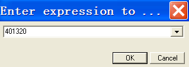
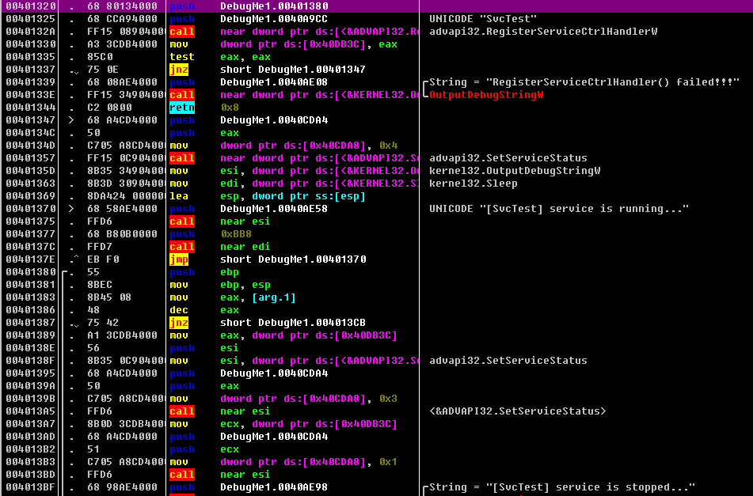

示例讲解
首先将示例程序移到工作文件夹里 然后执行如图命令
服务安装成功后 可以在服务列表中看到
启动服务后 我们可以看服务进程也就运行起来
需要注意的是 SvcTest服务进程是以services.exe进程的子进程形式进行的 其实 所有服务进程都是以该形式进行的 示例程序的功能非常简单 它经过一定时间间隔输出调试字符串
#服务进程的调试
要想准确调试服务进程 就不能想对待不同进程那样直接用调试器启动并调试 而需要将调试器附加到SCM运行的服务进程上
问题在于SCM
服务进程由SCM运行 这是服务进程调试的核心所在
○服务进程由SCM运行
○服务核心代码主要存在于主函数中
○服务主函数由SCM正常调用
我们要调试的是服务主函数 但使用调试器打开服务进程的可执行文件并开始调试时 服务主函数并不运行 所以调试时需要将SCM运行的服务主进程附加到调试器
调试器无所不能
使用调试器打开服务可执行文件无法直接调试服务主函数( SvcMain())代码。原因在于，SCM不会调用服务主函数(因非由SCM运行，故不能运行它)。但这并不意味着没有解决方法。因为调试器拥有被调试进程的强大权限，所以可以先将调试位置强制指定为服务主函数(如:OllyDbg的New orign here菜单),然后再调试。使用这种方法调试服务主函数不会有什么大问题，如果这种方法有效，建议各位使用。不过,使用这种方法必须拥有强大的调试器权限才行，服务进程行为比较复杂时，使用该方法就可能无法顺利完成调试
常用方法
调试服务最常用的方法是，先将SCM运行的服务进程附加到调试器后再调试。思路很简单，但执行方法可能有问题。因为SCM运行服务后再进行附加操作的话，此时的核心代码(服务主函数)已开始运行。因此，需要在SCM创建服务进程并运行EP代码前附加到调试器，这需要一定的调试技巧，后面的练习示例中将介绍。
服务调试练习
直接调试：强制设置EIP
首先，使用调试器直接打开服务程序，学习服务程序的调试方法。分析调试服务程序的EP代码与main()函数代码时，采用的调试方法与调试普通应用程序没有什么不同。但一般而言，服务程序的主要代码存在于服务主函数( SvcMain()与服务处理函数( SvcHandler()中。
由调试器而非SCM运行的服务进程不会调用SvcMain(与SvcHandler()函数。所以需要先得到这两个函数的地址,然后再将调试位置移动到那里。在OllyDbg调试器中打开DebugMel.exe程序,调试运行到main()函数处显示代码，如图所示。
在40106C地址处可以看到StartServiceCtrlDispatcher() API。对于EXE文件形态的Windows服务程序而言，必须在其EP代码内部调用StartServiceCtrIDispatcher( API,将服务主函数( SvcMain())的地址通知给SCM。所以，查找该API即可获得SvcMain（）地址。
StartServiceCtrlDispatcher() API的pServiceTable参数为SERVICE TABLE ENTRY结构体指针。跟踪该结构体即可得到服务名称字符串(“SvcMain”)与服务主函数( SvcMain() )的地址。
上图中,调试运行到40106C地址处的CALL DWORD PTR DS:[StartServiceCtrlDispatcher(]指令后，查看栈，如下图所示
pServiceTable( 12FD24 )的第一个成员( 40A9CC )为“SvcHost”字符串，第二个成员( 401320 )为SvcMain(函数的地址。
我们使用调试器的Ctrl+G命令 转到SvcMain（）函数地址处

函数如图

为了从401320处开始调试 需要先调整调试位置 将EIP调整到此处
这样 调试位置即被修改为服务主函数（401320） 除EIP寄存器外 其他值都不变 现在开始调试就行
服务调试的常用方法：“附加”方式
根据不同情况,我们有时需要将SCM正式运行的服务进程附加到调试器调试。这一过程需要应用一些简单的调试技术。为了帮助各位更好地理解该过程，下面用下图简单描述调试技术的具体操作步骤(以调试EP代码为准)。
以上操作流程的核心是,将服务进程附加到调试器前要进人无限循环，使服务进程的重要代码无法运行。原理非常简单，但具体实施时要充分考虑Service Start Timeout (服务启动超时)这- -因素，确保上述操作在规定时间内(默认为30秒)完成。
启动服务后，SCM会在一定时间内( Service Start Timeout) 等待服务状态变为STATUS RUNNING。 若规定时间内服务状态未改变，SCM就会引发ERROR_ SERVICE_REQUEST TIMEOUT错误，然后终止相关服务进程
也就是说，将服务进程附加到调试器后的30秒内，必须把服务进程的状态变更为STATUS RUNNING。而要更改服务状态，必须调用位于服务主函数的SetServiceStatus()API。但30秒内完成以上操作流程相当困难，所以具体操作前需要增加服务启动超时时间。
(1)安装服务
首先将示例程序安装为windows服务 创建ServicesPipeTimeout注册表 路径如图
(2)增加服务启动时间
我自己写的时间。。。
(3)修改文件：设置无线云环
设置EP地址覆写无限循环 用stud_PE工具 查看文件的EP地址
偏移量为C24 然后用HxD转到该地址处
原EP代码的前两个字节为0xEB 0xC0 在调试器中查看该位置 如图所示。
0xEB 0xC0是CALL指令的一部分 分别修改为0xEB 0xFE 如图所示。
用OD查看修改后的EP代码
0xEB 0xFE即为无限循环指令
然后启动服务时就出现了错误。。。。